Die ruhige, souveräne Lösung: Ihr Firmengrün als ganze Fläche, das komplette Logo in
Weiß — exakt Ihre Visitenkarte, nur umgekehrt. Der feine Lichtschein hinter dem Logo gibt der Fläche
Tiefe, ohne unruhig zu wirken. Auf den Seiten führt das Handschlag-Emblem die Marke fort.

Pflegedienst Monika Jansen
Seite · 30,9 × 101 cm

www.pflegedienst-jansen.de
Front · 100,5 × 100,5 cm
Ihre Grünen Engel
Seite · 30,9 × 101 cm
2Premium — Tiefer Verlauf mit Wasserzeichen
Hochwertig wie ein Messestand der großen Marken: ein tiefer Verlauf von Dunkelgrün ins
Firmengrün, dahinter Ihr Handschlag als riesiges, dezentes Wasserzeichen. Das Logo steht gestapelt und
zentriert — Emblem, Wortmarke, darunter der geschwungene Schriftzug. Wirkt edel und modern zugleich.
Ihre Grünen Engel
Seite · 30,9 × 101 cm
www.pflegedienst-jansen.de
Front · 100,5 × 100,5 cm
Pflegedienst Monika Jansen
Seite · 30,9 × 101 cm
3Markant — Der große Bogen
Der Hingucker für die Messe: Dunkelgrün oben, das Firmengrün schwingt als großer Bogen
über die Fläche — das Motiv Ihrer Visitenkarte, ins Große übersetzt. Der helle Konturbogen nimmt das
Grün des Schriftzugs auf. Maximale Fernwirkung, sofort als Jansen erkennbar.